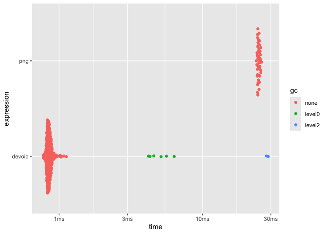

#| include: false
knitr::opts_chunk$set(
collapse = TRUE,
comment = "#>",
fig.path = "man/figures/README-",
out.width = "100%"
)This package provides a graphic device that does no operations. This makes it suitable for benchmarking functions that produce graphics as it removes the device implementation from the equation. In contrast to the nulldev() function from R.devices package this device is a true device implementation that simply does nothing rather than calling pdf() with a temporary file connection.
Installation
You can install devoid with the remotes package:
# install.packages('pak')
pak::pak('r-lib/devoid')Example
devoid provides a single function void_dev() which is used much like any other device:
Using it we can now see how much drawing time e.g. the png device is responsible for:
point_coord <- seq_len(1e4)
void_plot <- function() {
void_dev()
plot(point_coord, point_coord)
dev.off()
NULL
}
png_plot <- function() {
png(tempfile())
plot(point_coord, point_coord)
dev.off()
NULL
}
res <- bench::mark(devoid = void_plot(), png = png_plot(), min_iterations = 50)
plot(res)